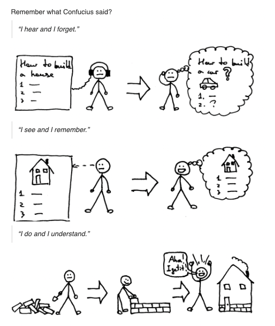

从头开始构建一个 Pascal 的解释器
前阵子无意中发现了一个系列教程：「Let's Build A Simple Interpreter 」，简称 lsbasi。本来只是随便翻翻，但刚看完 Part-1 就发现作者 Ruslan Spivak 不仅是一个出色的软件工程师，文笔也相当不错，更难得的是他对学习这件事本身有着很深入的理解，这些见解甚至反馈到了这套教程的设计上。
在的他个人简介中，有下面这句话，我深为认同：
❝ I believe to become a better developer you MUST get a better understanding of the underlying software systems you use on a daily basis and that includes programming languages, compilers and interpreters, databases and operating systems, web servers and web frameworks. And to get a better and deeper understanding of those systems you MUST re-build them from scratch. ❞
他推出的两个系列教程：
- Let's Build A Web Server (600+ stars)
- Let's Build A Simple Interpreter (1500+ stars)
都是在践行他的这一观点，即是帮助自己，也是帮助其它亟待成长的工程师。
简介
lsbasi 的主要内容就是手把手地教你从 0 到 1 地用 Python 实现一个具备解释下面这段 Pascal 程序能力的解释器：
program factorial;
function factorial(n: integer): longint;
begin
if n = 0 then
factorial := 1
else
factorial := n * factorial(n - 1);
end;
var
n: integer;
begin
for n := 0 to 16 do
writeln(n, '! = ', factorial(n));
end.
当然，整个教程的大框架逃不出编译原理。如果你看过「龙书」或者「SICP」，你可以简单地将 lsbasi 当作它们的玩具版，那么此教程对你的帮助就比较有限。但如果相反，你没有学习过编译原理，没有看过「龙书」或者「SICP」，或者尽管学过，但你还记着的东西已经所剩无几，那我强烈建议你试试这个教程。
遗憾的是，lsbasi 至今尚未完结。它最早的一篇教程发布于 2015 年 7 月 15 日，最近的一篇教程发布于 2020 年 3 月 19 日，前后跨越了 5 年。但值得庆幸的是，最后一篇教程离完结的距离并不太远。我们大可以将剩余部分当作思考练习去完成，别忘了「生成」也是一种很重要的高效学习策略。
My takes
教科书般的结构
Ruslan 在写 lsbasi 系列时用的叙述结构，我认为可以说是教科书级别的。整个结构概括如下：
个人以为这种结构值得任何一位以传播知识为目的内容生产者参考。
子曾经曰过吗？
在「Part 4」的开头，我看到了下面这一段：

我绞尽脑汁也没想出来《论语》里有这三句英文对应的句子：
- I hear and I forget
- I see and I remember
- I do and I understand
经过一番搜索，终于在这篇博客里找到了答案，原来是荀子说的：
❝ 不闻不若闻之，闻之不若见之，见之不若知之，知之不若行之；学至于行之而止矣。行之，明也。❞
这让我想起在和我的英文老师聊天聊到孔子时，他提到孔子有一句话给他的印象非常深刻：
❝ Before you embark on a journey of revenge, dig two graves. ❞
我当时也是愣了很久，也没想起来孔子说过这话，如果有兴趣可以看看这篇博客的考证。总得来说，在一个计算机编译原理的英文教程中看到我国古圣先贤的话被引用的感觉是相当「因崔思婷」。
我的练习
我跟着教程用 Go 实现了这个 Pascal 解释器，放在了项目 pset 中。其实这个项目也是受到 Ruslan 的启发。在本文文首引用的那段话中有这么一句：
❝ And to get a better and deeper understanding of those systems you MUST re-build them from scratch. ❞
只看到这句话的人可能会想：真的有必要吗？实现到什么程度？我需要写一个能跑 TPC Database Benchmarks 的分布式数据库才敢跟别人说了解数据库吗？我需要自己实现一个完全兼容 RFC 7231 的 HTTP 服务器才能拍着胸脯说自己懂 HTTP 协议吗……
我觉得并非如此，而且应该没有人能做到。重要的是你了解它们的原理，动手实践是了解原理的重要一步，学习如果没有产出，没有持续的练习，你学到的东西会很快消失在记忆中。像 lsbasi 这样的项目，就很适合作为这种练习，不会复杂到让你无从下手，也不会简单到让你懒得动手，别忘了「给学习制造一点麻烦」可以帮助你掌握地更扎实。
我将 pset 定义为一个类似 lsbasi 这种小型、原理型项目的仓库，它会成为我在工程方面积累的一部分，同时当我想学一门新的编程语言时，它们也很自然的将成为我的练习首选。